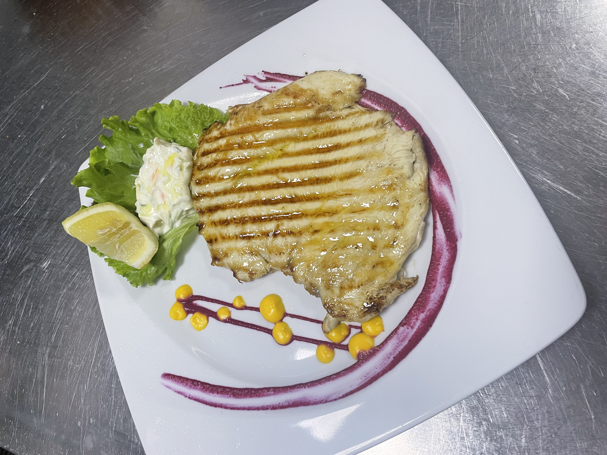
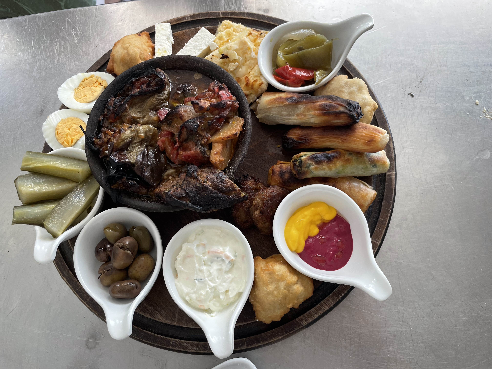
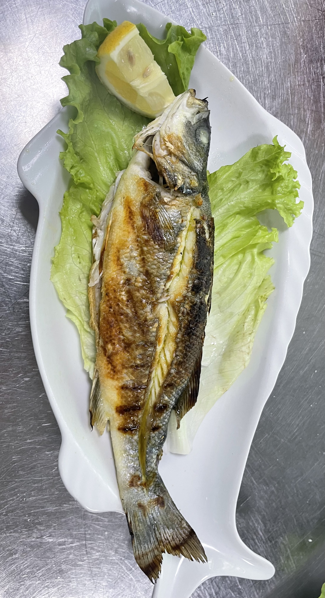
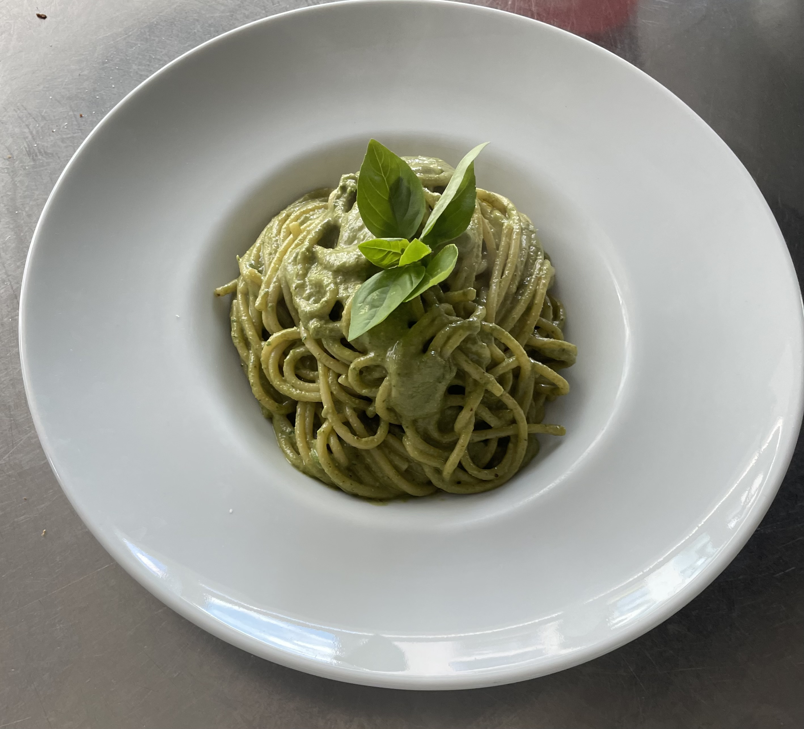
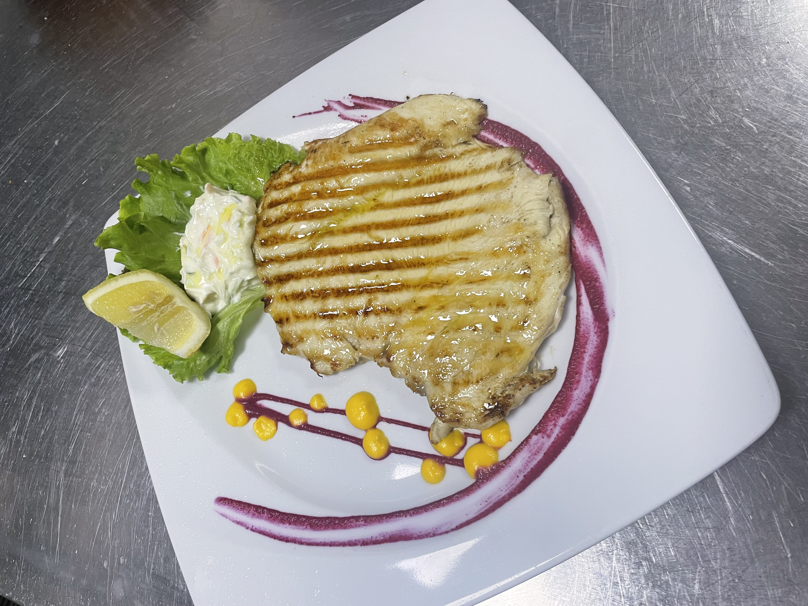
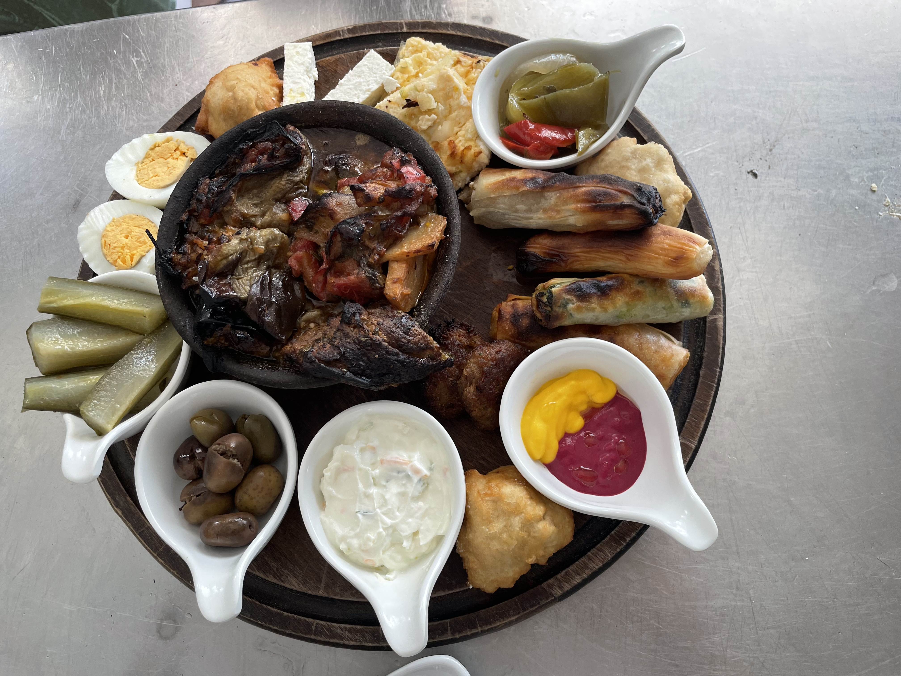
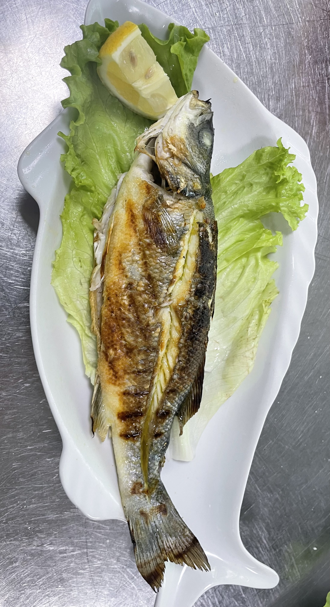
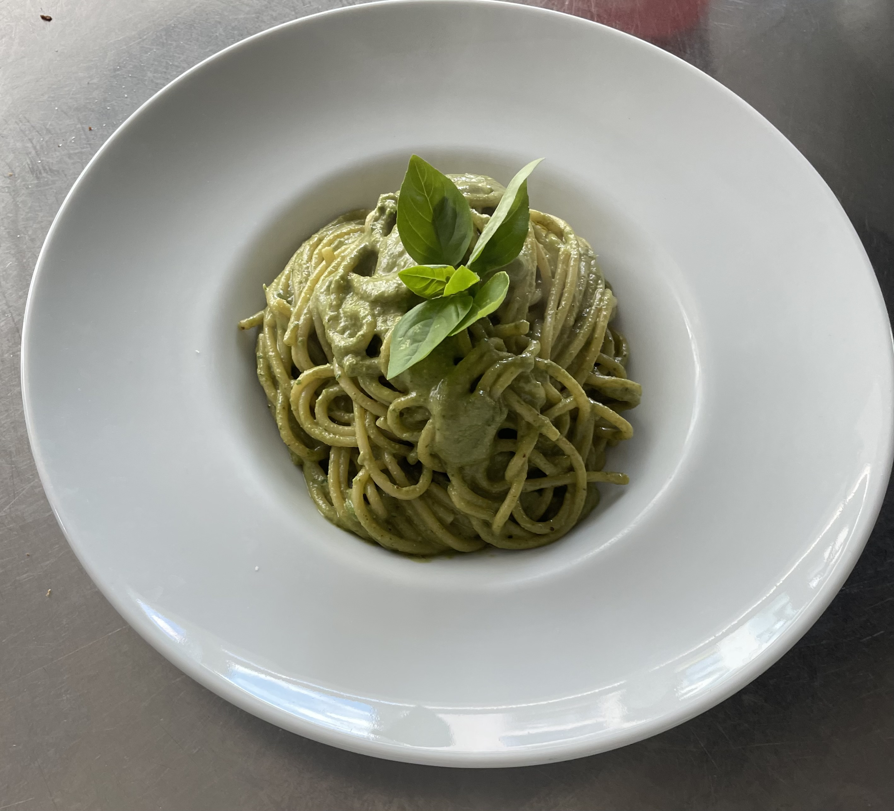

Punonjës kuzhine
Restorante mesdhetare – Jugu i Shqipërisë (sezonale) - 2016 - 2019
- Përgatitje paraprake për antipasta, brumëra për pica dhe përbërës të freskët.
- Mësimi i teknikave tradicionale italiane të përgatitjes së pastave.
- Ndihmë në kuzhinë gjatë eventeve dhe sezoneve të ngarkuara.
 






